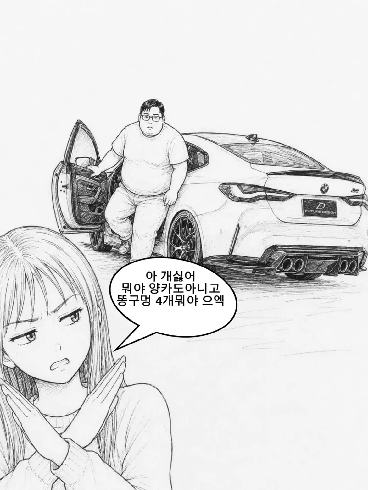
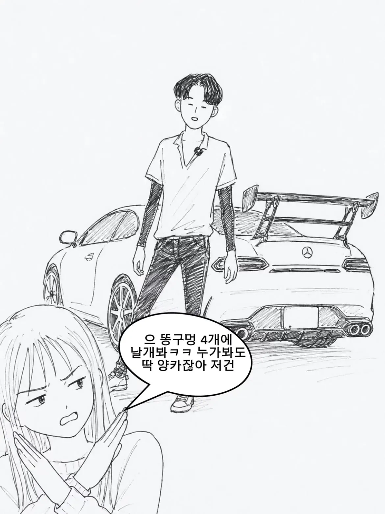
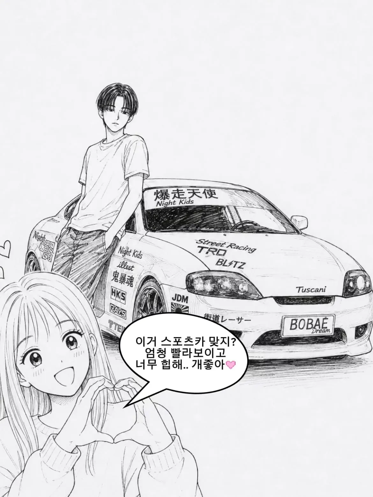
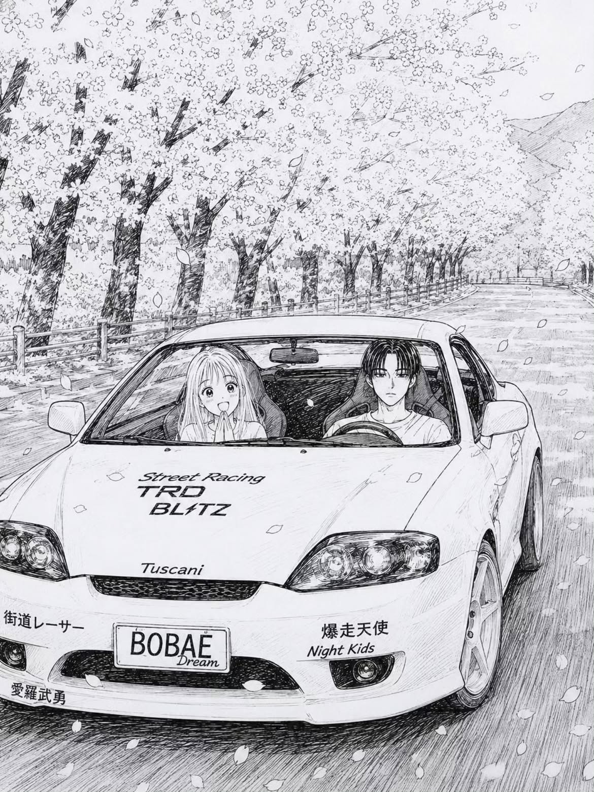
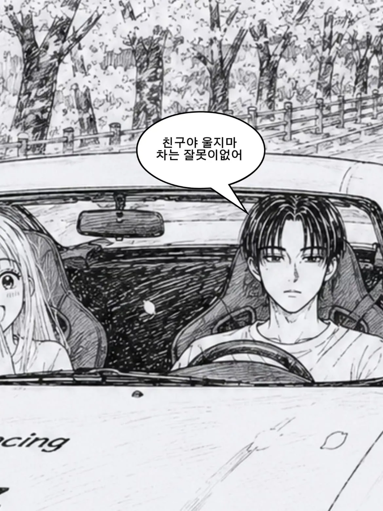

저죧같은 날개는 왜 다는거임? 저번에 엘란트에 날개달렸던데
다운포스낼려고 다는거임 스포츠모델에 순정인경우도있고 뒷바퀴접지력높이려고
리어윙 다는 이유는 1. 간지, 2. 안전성, 3. 효율성
최고속도 느려짐
빨리 달리면 날개가 바람을 맞아서 차를 아래로 눌러줌 > 차가 눌림 > 차가 눌리면 접지력이 올라감
> 접지력이 올라가면 속도를 덜 줄이고도 코너를 돌 수 있음
이건 서킷을 달리는 레이싱 카의 이야기고 공도에서 위와 같은 효과를 내려면
당연히 속도위반에 해당하므로 모두 겉멋충임ㅇㅇ
FR타입일때 리어가 뜨면 ㅈ되기 때문에 접지력 높이는게 유의미 하다만 조선놈들 차 중에 FR타입 유사한거 해봤자 포터나 스타렉스인데 거따ㅋㅋㅋㅋ 씹가오충 맞음
레이싱카는 차가 너무 빨리 움직이면 양력이 발생해서 차체가 지면에서 살짝 뜨기 때문에 바퀴가 헛돌아버리는 현상을 막고, 코너링 할 때 접지력이 높으면 유리하니까 차체를 바닥으로 누르는 다운포스를 만들기 위해서 뒤집어진 날개을 닮. (기타 차체 설계도 적절한 다운포스를 만듦)
그 레이싱카를 보고 순진한 친구들은 '아! 차에 날개를 달면 빨라지는구나!'라고 생각함 -> 애초에 공도에서 충분한 다운포스가 생길 정도로 운행도 못 할 뿐더러, 만약 빨리 달린다면 항력이 커져 실제로는 속도가 느려지고, 다른 보완 설계가 없어서 뒷바퀴에 하중을 집중적으로 가해 타이어를 망가뜨리는 날개를 달고 즐겁게 돌아다님.
투스카니 존잘남 vs 마이바흐 평범남 그녀의 선택은?
편의점 샛별이 vs 치과의사 평범녀
남자의 선택은?
치과의사 평범녀
난 샛별이 ㅎ
샛별이
썃다맨 시켜주는거 맞지?? 그럼 후자
개업의야 봉급의야? 암튼 닥 후
혜정이
신사용 유투브 보면 양카 타는 사람들 외관 하나같이 살발하긴 하더라

포르..하길래 여자다리 벌어졌다가 테! 하니까 딱 닫히는 병신만화 있었는데
이젠 그런 멍청한 시대는 지났네 ㅋㅋㅋㅋ